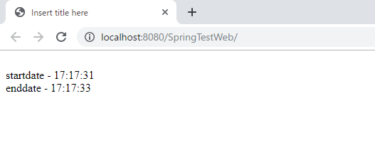
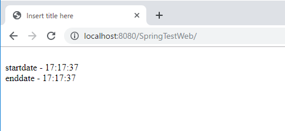
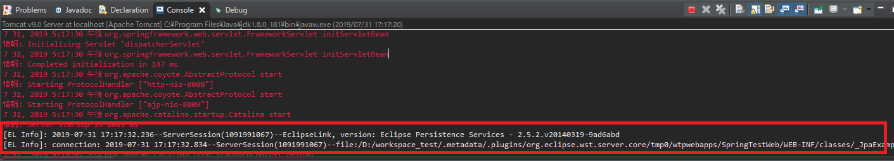
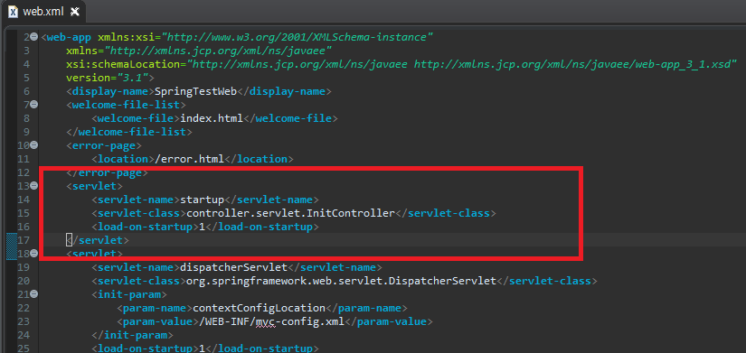
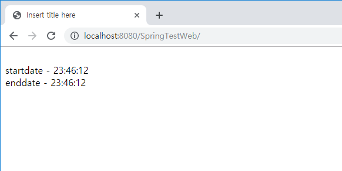

[Java] Java servletでインスタンスを初期する方法
こんにちは。明月です。
ウェブサービスを起動して後、それぞれのコントローラやファクトリー、クラスはウェブ要請とか呼び出されない以上、インスタンス生成できないです。
<%@ page language="java" contentType="text/html; charset=UTF-8" pageEncoding="UTF-8"%>
<!DOCTYPE html>
<html>
<head>
<meta charset="UTF-8">
<title>Insert title here</title>
</head>
<body>
<br />startdate - <span id="startdate"></span>
<br />enddate - <span id="endate"></span>
<script src="//code.jquery.com/jquery-3.4.1.min.js"></script>
<script src="//cdnjs.cloudflare.com/ajax/libs/moment.js/2.24.0/moment.min.js"></script>
<script>
$(function() {
$("#startdate").html(moment().format('HH:mm:ss'));
$.ajax({
type : "GET",
url : "test.json",
success : function(msg) {
console.log(msg);
$("#endate").html(moment().format('HH:mm:ss'));
}
});
});
</script>
</body>
</html>
@Controller
public class Test {
@Autowired
private UserDao userDao;
@RequestMapping(value = "test.json", method = RequestMethod.GET)
@ResponseBody
public String index(HttpSession session, HttpServletRequest req, HttpServletResponse res) {
List<User> users = userDao.selectAll();
Gson gson = new Gson();
return gson.toJson(users);
}
}
上の例はajaxで「test.json」を呼出します。「test.json」の場合は「Test」クラスの「index」メソッドが呼出します。その中で「Dao」クラスを呼出し、「JPA」フレームワークでデータを取得します。
でもこの「JPA」フレームワークは初めインスタンスを生成する時に時間がかかりますね。


初めの呼出し時には2秒の時間がかかりましたが、２つめは1秒の時間もかからないです。なぜかいうと「JPA」フレームワークのインスタンス生成時間です。

でも一回インスタンスが生成されるとシングルトンでメモリ上の存在されます。なので２つめはインスタンス生成なしで再参照するのでインスタンス生成時間がかからないです。
私の場合は「JPA」フレームワークだけで説明しましたが、もし大きいプロジェクトだっと初期起動するライブラリやクラスがすごくあると思います。
その時に初期処理するウェブページを作ってそのクラスで初期処理することを実装してデプロイした後呼出してもできますね。でも、その方法より「web.xml」でデプロイした後、自動に呼び出せるようにできますね。
<servlet>
<servlet-name>startup</servlet-name>
<servlet-class>controller.servlet.InitController</servlet-class>
<load-on-startup>1</load-on-startup>
</servlet>

「web.config」で「servlet-name」は「servlet」タグの中で必須タグでユーニック名を入力しましょう。「servlet-class」タグはプログラムが起動する時に実行するクラス名を設定します。
そして「load-on-startup」は実行順番ですが「0」から始まります。つまり、「servlet」タグが複数がある場合、低い番号から同じ数字なら「xml」で上から実行順番を決めます。
参考で「0」の以下の数字は実行しません。
// サーブレットを継承する。
public class InitController extends HttpServlet {
// get, postではなくinitをオバーロードする。
public void init(ServletConfig config) throws ServletException {
super.init(config);
// 意味がないデータの検索ですが、ただJPAを起動するためのソースになる。
FactoryDao.getDao(UserDao.class).selectAll();
}
}

プログラムが起動する時、「InitController」クラスで「JPA」フレームワークを起動されるからウェブページを初めに接続しても応答時間が早いですね。
私の場合は「JPA」のフレームワークのメモリに上がるように実行しましたが、IOリソースを割当てるためや、サーバソケットを起動するためによく使えますね。
- [Java] Java servletでインスタンスを初期する方法2019/10/17 07:15:48
- [Java] Spring web frameworkで発生する文字化けのEncoding設定2019/10/16 07:32:55
- [Java] Web Spring frameworkでfilter設定2019/10/15 20:12:35
- [Java] Web serviceのweb.xmlでエラーページ設定2019/10/14 20:13:44
- [Java] JPAのDAOをFactoryパターンで管理する方法2019/10/13 22:55:52
- [Java] JPAのSpring frameworkで依存性注入する方法2019/10/13 00:40:08
- [Java] JPAでDAOを生成する方法2019/10/11 07:30:14
- [Java] JPAでトランザクションの使用方法とオブサーバーパターンで共通トランザクション関数を作り方2019/10/10 07:29:43
- [Java] JPAのQuery を作り方2019/10/09 07:34:08
- [Java] JPAのEntityクラス設定(Cascade, fetch)2019/10/08 07:43:33
- [Java] JPAでpersistance.xml設定とentityクラス設定(@GeneratedValue設定)2019/10/07 07:38:13
- [Java] EclipseでJPAフレームワーク設定する方法2019/10/04 19:24:43
- [Java] Web spring frameworkのJSPで使う言語 JSTL - XML2019/10/03 20:02:06
- [Java] Web spring frameworkのJSPで使う言語 JSTL - 関数、データベース2019/10/02 21:00:22
- [Java] Web spring frameworkのJSPで使う言語 JSTL - コアー、フォーマッティング2019/10/01 21:48:08
- [C#] 数字フォーマット(お金表示及び小数点以下表示)2020/04/03 00:38:37
- [C#] コマンド(cmd)を実行する方法(Processクラス)2020/03/31 07:15:40
- [C#] FTPに接続してファイルダウンロード、アップロードする方法2020/03/27 19:20:14
- [C#] HttpWebRequestを利用してウェブページを読み込みする方法2020/03/27 00:23:19
- [C#] Base64のエンコード、デコードする方法2020/03/26 02:19:50
- [Java] 日付フォーマット(SimpleDateFormat)を使う方法2020/03/25 00:36:53
- [Java] サーブレット(Servlet)の環境でファイルアップロード(プログレスバーでファイルアップロード状態を表示する方法)する方法2020/03/24 00:48:21
- [Java] Spring環境でファイルアップロード(プログレスバーでファイルアップロード状態を表示する方法)する方法2020/03/22 23:15:12
- [Java] FTPに接続してファイルをダウンロード、アップロードする方法(FTPClient)2020/03/20 02:44:36
- [Window] WindowでFTPサーバを構築する方法2020/03/19 03:27:22
- [Java] JSPのSpring環境でschedulerのcronを使う方法2020/03/18 00:24:32
- [Java] POIを利用してExcelを扱う方法2020/03/17 01:48:00
- [Java] PDFを出力する方法(itextpdf)2020/03/13 00:47:31
- [Java] ログライブラリ(log4j)を使う方法2020/03/12 00:54:39
- [Java] Jsonタイプのデータを使う方法(Gsonライブラリ)2020/03/11 00:30:15